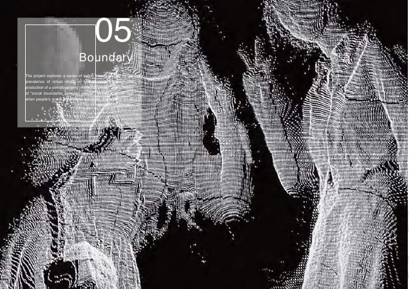
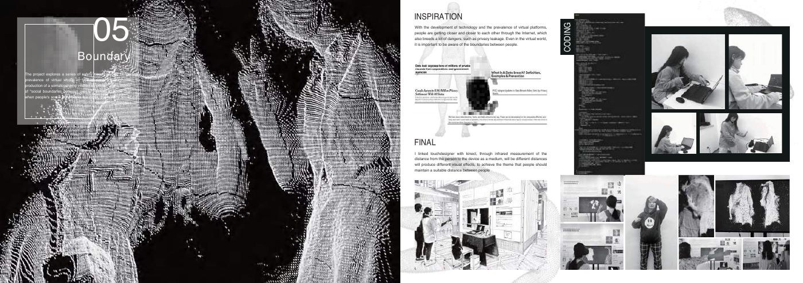
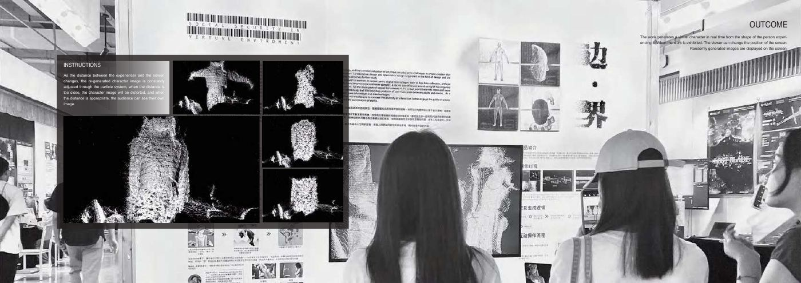

Embodied interaction · Creative technology
Boundary
Make personal distance visible through a changing digital body.
A Kinect and TouchDesigner installation that turns proximity into a real-time particle portrait. Moving too close distorts the image, making an invisible social boundary tangible.
This work is a physical installation. The documentation shows the original project; there is no browser simulation presented as the installation.

Experience at a glance
An invisible boundary
Digital spaces can make closeness feel immediate while obscuring the boundaries people need. Boundary translates that tension into a physical interaction visitors can discover through movement.
The work asks what happens when a virtual representation becomes less coherent as someone moves too close.
The interaction model
A Kinect supplies depth and proximity information to TouchDesigner. A real-time particle system reconstructs the participant’s form and changes its visual behavior as the distance to the screen changes.
At an appropriate distance, visitors can recognize their image. Closer proximity distorts it. The participant learns the relationship between their movement and the system’s response through immediate visual feedback.
Why it belongs in this portfolio
The project demonstrates interaction design beyond a conventional interface: spatial input, continuous feedback, and an experience understood through the body.
It is a foundation for thinking about embodied AI interfaces, while the actual implementation remains a sensor-driven visual installation.
What is demonstrated
The original portfolio documents the coding environment, development, and the installation in use. The original development and outcome spreads are reproduced below.
A future evaluation would test whether visitors can discover the distance rule without instruction and whether the distortion communicates a boundary rather than a tracking failure. No formal usability results are claimed.

